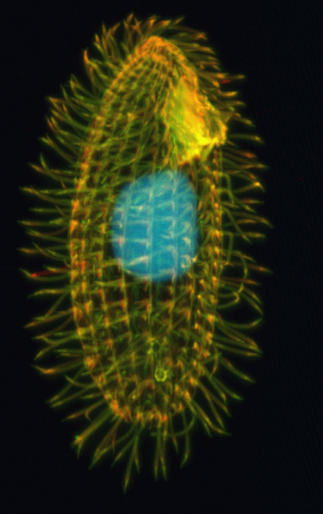
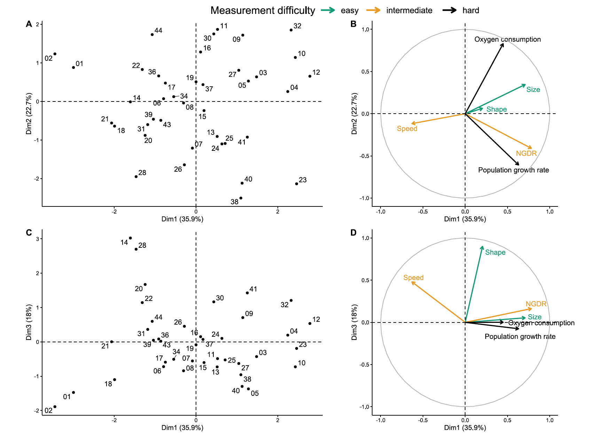

Overview: diversity of methods
Radchuk Viktoriia
2023-04-04
Unconstrained and constrained ordination

Unconstrained methods

Constrained methods

Main data requirements
- Linear relations among the descriptors
- How often is this the case?
- How often is this verified?
Vegetation data
data(varechem)
str(varechem)
## 'data.frame': 24 obs. of 14 variables:
## $ N : num 19.8 13.4 20.2 20.6 23.8 22.8 26.6 24.2 29.8 28.1 ...
## $ P : num 42.1 39.1 67.7 60.8 54.5 40.9 36.7 31 73.5 40.5 ...
## $ K : num 140 167 207 234 181 ...
## $ Ca : num 519 357 973 834 777 ...
## $ Mg : num 90 70.7 209.1 127.2 125.8 ...
## $ S : num 32.3 35.2 58.1 40.7 39.5 40.8 33.8 27.1 42.5 60.2 ...
## $ Al : num 39 88.1 138 15.4 24.2 ...
## $ Fe : num 40.9 39 35.4 4.4 3 ...
## $ Mn : num 58.1 52.4 32.1 132 50.1 ...
## $ Zn : num 4.5 5.4 16.8 10.7 6.6 9.1 7.4 5.2 9.3 9.1 ...
## $ Mo : num 0.3 0.3 0.8 0.2 0.3 0.4 0.3 0.3 0.3 0.5 ...
## $ Baresoil: num 43.9 23.6 21.2 18.7 46 40.5 23 29.8 17.6 29.9 ...
## $ Humdepth: num 2.2 2.2 2 2.9 3 3.8 2.8 2 3 2.2 ...
## $ pH : num 2.7 2.8 3 2.8 2.7 2.7 2.8 2.8 2.8 2.8 ...
Bivariate exploratory plots
Specific focus of methods on communities
- RDA: linear relation between the species abundance
(presence/absence) and the environmental factors
- How often such relations
will be linear?

Ecological niche

Paradox
Many multivariate methods were developed to deal with community
data.
Linearity is rarely the case in the relation between environment and
species abundance (neither according to the theory nor empirical
evidence).
And some methods are based on unimodal responses of species to
environments (CA and CCA), whereas the others assume linearity (but
distance-based and transformation-based methods deal with the issue of
‘double zeros’).
Case study
Complexity vs linearity: relations between functional traits
in a heterotrophic protist
Svendsen et al. 2023 BMC Ecol & Evol

Nils Svendsen

Nicolas Schtickzelle
Functional traits
- “…morphological, biochemical, physiological or
behavioral characteristics that are expressed by individuals and
considered relevant to
- the response of such organisms to the environment:
Response traits, and/ or
- their effects on ecosystem properties:
Effect traits (Violle et al. 2007 Oikos).
- How to pick up the right ones?
- How to measure all of the relevant ones?
- Proxies are needed but are they reliable?
Correlation between functional traits in a ciliate
Tetrahymena thermophilla as a study species: 40 strains with
variation in traits.

@Wikipedia
Hypothesized relations

@ Fig. 2 from Svendsen et al (2023)
Hodgson et al. (1999) proposed to distinguish soft and hard
traits.
Hard traits: directly related to ecosystem functioning
but are difficult to measure;
Soft traits: easy to measure but the link with
ecosystem fnctioning may be not obvious.
PCA on traits

@ Fig. 4 from Svendsen et al (2023)
Circle of equilibrium contribution visualises the
importance of single predictors. The predictors that reach circle
contribute equally to all PCA axes, descriptors that reach out of the
circle radius make a higher contribution than average to the current
display (usually 2 axes) and can be interpreted with confidence.
Pair-wise relations

@ Fig. 4 from Svendsen et al (2023)
Linearity is not a rule
- Of the 15 assessed pair-wise relations, 8 were
non-linear, as evidenced by a higher deviance explained with GAM
compared to that explained with LM.
- No strong correlations in the multidimensional
space among the variables that contributed strongly to the first the
Principal Components.
- The fits of the models were pure with single traits
as predictors but even having multiple traits predicting another one
would not solve the issue, as demonstrated with low correlations among
traits according to PCA.
Check-up
- What are then alternatives if we deal with multiple
predictors (and multiple response variables)?
- What have to be kept in mind when using this
alternative?
- What is the advantage (if any?) for using
distance-based approaches (PCoA and db-RDA) vs transformation-based
approaches (tb-RDA and tb-PCA)?